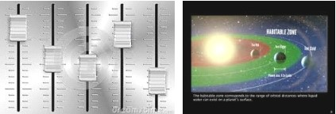
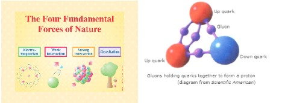

CONTENTS
Believe in Malaika is must to be a Muslims
Quran about nature of Malaika
- Multifunctional
- Limited knowledge
- Eight Fundamental forces Surround Throne - Establish Allah's Order in Universe
- Plan & Manage the Affairs of the universe
- Controlled by one supreme power
- Never Rebel – Can break the world but can not be under perform
Role of Malaika in Human Life and in the Universe
- Job of Malaika - to execute divine schemes
- Divine Support to Prophet Mission and MOMINEEN'S Efforts
- Welfare state supported by Malaika
- Work Malaika role on human physical body
- Malaika provide help to oppressed people
- Malaika help humans in development work
- What Malaika do to a good person at his death
- What Malaika do to the bad people at death time
- Malaika question oppressed people at death time – fate of oppressed people who do not migrate
- Malaika as human friends
- Malik as custodian of Hell
Executor of Allah's Schemes
- Executed in Steps That May Take 50,000 Years or More
- Evolutionary duty of malaika
More about Malaika
Is Satan from Malaika
BELIEVE IN MALAIKA IS MUST FOR MUSLIMS
يَا أَيُّهَا الَّذِينَ آمَنُوا آمِنُوا بِاللَّـهِ وَرَسُولِهِ وَالْكِتَابِ الَّذِي نَزَّلَ عَلَىٰ رَسُولِهِ وَالْكِتَابِ الَّذِي أَنزَلَ مِن قَبْلُ
ۚ وَمَن يَكْفُرْ بِاللَّـهِ وَمَلَائِكَتِهِ وَكُتُبِهِ وَرُسُلِهِ وَالْيَوْمِ الْآخِرِ فَقَدْ ضَلَّ ضَلَالًا بَعِيدًا ١٣٦
4:136 O you who profess to believe! hold fast unto your belief in Allah, His Rusul, the Book which He has sent to this Rasool, and those which He had sent earlier. He who denies Allah, His Malaika, His Books, His Rusul and the Hereafter has surely gone far astray.
MALAIKA'S ROLE AS TO BEAR WITNESS
لَّـٰكِنِ اللَّـهُ يَشْهَدُ بِمَا أَنزَلَ إِلَيْكَ ۖ أَنزَلَهُ بِعِلْمِهِ ۖ وَالْمَلَائِكَةُ يَشْهَدُونَ
وَكَفَىٰ بِاللَّـهِ شَهِيدًا
[4:166] Allah bears witness to the truth of what, out of His Own wisdom, has been sent down to you
وَالْمَلَائِكَةُ يَشْهَدُونَ and the Malaika (i.e. the magnificent system prevailing in the universe) also bear witness to that effect.
Allah is sufficient as a witness.
وَكَفَىٰ بِاللَّـهِ شَهِيدًا
Anthropic cosmological principle. The universe has been highly fine tuned to create Adam
Out of 40 fine tunings properties of the universe, if any one property deviate slightly, there will no universe and no life as we know.
For example: Earth is 93 millions KM away from the sun. If earth is 1% near to the sun, the oceans will boil out. No water no life.
If the above distance is increased by 5%, all oceans will freeze. There will be no life on earth. Adam can survive in special green zone.

QURAN ABOUT NATURE OF MALAIKA
Malaika, sent to run Universe, are Multifunctional
الْحَمْدُ لِلَّـهِ فَاطِرِ السَّمَاوَاتِ وَالْأَرْضِ جَاعِلِ الْمَلَائِكَةِ رُسُلًا أُولِي أَجْنِحَةٍ مَّثْنَىٰ وَثُلَاثَ وَرُبَاعَ ۚ يَزِيدُ فِي الْخَلْقِ مَا يَشَاءُ ۚ إِنَّ اللَّـهَ عَلَىٰ كُلِّ شَيْءٍ قَدِيرٌ ﴿١
35/1 الْحَمْدُ لِلَّـهِ فَاطِرِ السَّمَاوَاتِ وَالْأَرْضِ All Hamd is for Allah the Almighty. Who created universe into being out of nothingness.
جَاعِلِ الْمَلَائِكَةِ رُسُلًا He has made the heavenly forces a medium to complete His schemes
أُولِي أَجْنِحَةٍ مَّثْنَىٰ وَثُلَاثَ وَرُبَاعَ and some of the forces are multi-functional, each having two, three or four capabilities.
ۚ يَزِيدُ فِي الْخَلْقِ مَا يَشَاءُ He continues to add new creations to it every now and then, as He wills.
إِنَّ اللَّـهَ عَلَىٰ كُلِّ شَيْءٍ قَدِيرٌ He has set measures (laws) according to which everything functions; and He has full control over them.
MALAIKA'S LIMITED KNOWLEDGE
ثُمَّ عَرَضَهُمْ عَلَى الْمَلَائِكَةِ فَقَالَ أَنبِئُونِي بِأَسْمَاءِ هَـٰؤُلَاءِ إِن كُنتُمْ صَادِقِينَ
قَالُوا سُبْحَانَكَ لَا عِلْمَ لَنَا إِلَّا مَا عَلَّمْتَنَا ۖ إِنَّكَ أَنتَ الْعَلِيمُ الْحَكِيمُ
2:31 then He set them before the MALAIKA and said, "Tell Me the names of these, if what you say be true."
2:32 The Malaika whereupon, said: "Your Plan extends much beyond the limits of our vision. We only have the knowledge which has been given to us, and do not have the capacity to acquire any more. You have complete knowledge of the entire Universe and only You know Your Plans."
EIGHT FORCES OF NATURE MAINTAIN THE UNIVERSE
Total number of malaika is not specified in Quran
وَالْمَلَكُ عَلَىٰ أَرْجَائِهَا ۚ وَيَحْمِلُ عَرْشَ رَبِّكَ فَوْقَهُمْ يَوْمَئِذٍ ثَمَانِيَةٌ
69:17 And the malaika will stand on the sides, with eight of them bearing aloft the authority & control of your Resource Provider on that Day.
PLAN & MANAGE THE COMMANDS 79:5
فَالْمُدَبِّرَاتِ أَمْرًا
Science
The universe is run by interaction of four fundamental forces as given below. These fundamental forces 100% conform to the procedures given in the form of natural laws of physics. The natural laws never deviate, never change. Scientist discover the natural laws, bring them in mathematical codes and put them under human use. So the natural forces conform to human instructions to do wonders in the form of technology and development. Natural forces are multifunctional, such as electro-magnetic for is responsible for radio waves, wireless phone, TV, Microwave ovens ete.
Quran say there are eight forces of nature that establish the working of our universe [69/19]. Science is yet to discover the remaining four forces. It is possible that with the help of newly discovered forces of nature, the human will spread into galaxy. There are some scientific observation for which the natural laws are not yet discovered. For example, electron or photon entanglement phenomena; how future shape the past in sub-atomic world, how human consciousness communicate to matter and change its form.
Mystical experiences are individual experiences inside the saints mind and available to others. Whereas scientist is based upon evidence which can be repeated under the same conditions. Science is an objective way of looking into the subject, and unlike religion, science is beyond the human monopoly.
- Fundamental forces: so far discovered 4
1. Strong Nuclear Force; Carrier is zero mass gluon. Most abundant, Keep protons inside nucleolus; converts in heat & light of sun
2. Weak Nuclear 'Force; Carrier is boson having mass. It kicks strong force out of nucleus, convert into heat & Light of sun, reach to earth in 9 minutes
3. Electromagnetic Force: Carrier is photon with zero mass. long in range; Example: Electricity, heat, light
4. Gravity: Carrier not found yet. long in range; cause weight, speed of light.
- Natural Laws - A Procedure manual order of Allah for forces of nature to conform; in the language of mathematics. Natural laws of two types:
1. Natural Laws of Physics that run the universe including our physical body
2. Quran Laws of results to human Free-Choice. A person invoke the results to his deeds / thinking though his use of free choices.
STRUCTURE OF AN ATOM WHICH IS HOME TO TWO NATURAL FORCES
Our Universe is made of: Matter Components
- Proton - 2 Up & 1 down Quarks
- Neutron - 2 Down & 1 Up Quarks
- Electron Negative charge
- Higgs Boson field - that provide mass to matter
Our universe has four Dimensions Four (1) Time Space (2) Space fore/back (3) Space right/left (4) Space up/down
Human mind can think in reference to the above four dimensions
Atom is made of nucleus have positively charges protons surrounded by equal number of negatively charged electrons. Element hydrogen has one proton and one electron. Uranium have 92 protons and 92 electrons. Nucleus of an atom also contains no charge neutron which are equal to or slightly ore in number than proton. Atomic number is number of proton in an atom.
Each proton with two up-quarks and one down-quark. Quarks are put together in proton by strong nuclear force interacted through gluons. This force is of very short range and is confined inside nucleus. Strong force also keep proton or neutrons assembled up with three Quarks. Strong force behaves like a behaves like a rubber band.
In the nucleolus of an atom of like iron, there are 26 protons and 29 neutrons. Proton having positive charge repel other protons inside nucleolus. Through the insulation of neutrons, strong force keep protons tied up inside nucleus. Strong force is more powerful than electromagnetic force so, in the presence of neutrons, it can keep maximum 92 protons confined in a nucleolus.
Neutron have one up-quark and two down-quarks. When weak nuclear force kick one of the up-quarks of proton to convert proton into a neutron, slight extra mass of neutron shoot-out in the form of heat which is a form of electromagnetic force. Electromagnetic force has infinite range that is why the heat generated in the sun reach to earth in 8 minutes.
Illustration of four forces as in yellow. A proton.

Our physical body is run by multifunctional electromagnetic force.
MALAIKA UNDER ONE COMMAND PROVIDE
EVIDENCE TO لَا إِلَـٰهَ إِلَّا هُوَ
وَأُولُو الْعِلْمِ قَائِمًا بِالْقِسْطِ ۚ وَالْمَلَائِكَةُ لَا إِلَـٰهَ إِلَّا هُوَ شَهِدَ اللَّـهُ أَنَّهُ
3:17
شَهِدَ اللَّـهُ أَنَّهُ
origin of life, consciousness)
2nd evidence: وَالْمَلَائِكَة Natural forces with one origin and their perfectly matched working
3rd evidence: All those who are endowed with knowledge and قَائِمًا بِالْقِسْطِ ۚ establish order based upon justice. (success of living system based upon principles as given in Quran)
Testify لَا إِلَـٰهَ إِلَّا هُوَ الْعَزِيزُ الْحَكِيمُ
Allah alone who wields the Ultimate and Supreme Authority, (and the entire system is functioning in a most orderly manner because of) His Dominance and Wisdom.
NEVER REBEL – CAN BREAK THE WORLD BUT CAN NOT UNDER PERFORM
Malaika are forces of nature. Malaika categories or number is not specified in Quran. At verse 69/17, it says that 8 fundamental forces are holding the system of our universe. Out of which, assumably, four forces has been discovered so far and put under human use. (Sajda of malaika) . Dark energy, that is responsible for universe expansion is still under research.
The procedure, how the malaika has to perform their duties, is given in the form of natural laws. Natural laws can never ever be changed or deviated.
16/(49) وَلِلَّـهِ يَسْجُدُ مَا فِي السَّمَاوَاتِ وَمَا فِي الْأَرْضِ مِن دَابَّةٍ وَالْمَلَائِكَةُ وَهُمْ لَا يَسْتَكْبِرُونَ
And everything in the Heavens or on Earth, animate or forces of nature, يَسْجُدُ submit to Allah's laws without being arrogant
Speed of photon is 300,000 km/second. It is the speed of time and maximum speen known to human.
ROLE OF MALAIKA IN HUMAN LIFE
MALAIKA - EXECUTE DIVINE SCHEMES
الَّذِينَ يَحْمِلُونَ الْعَرْشَ وَمَنْ حَوْلَهُ
40/7 These forces are assigned the task of maintaining His central control over the entire universe.
يُسَبِّحُونَ بِحَمْدِ رَبِّهِمْ وَيُؤْمِنُونَ بِهِ At the same time they implement His programs, so that Allah's system of Nourishment provider, which deserves all praise, continues to function perfectly. They have full trust in it.
وَيَسْتَغْفِرُونَ لِلَّذِينَ آمَنُوا
Provide Momineen with protection against all dangers.
رَبَّنَا وَسِعْتَ كُلَّ شَيْءٍ رَّحْمَةً وَعِلْمًا
Your Quality of Rabb encompasses the entire universe; have knowledge of potentialities in everything and how these can be developed
DIVINE SUPPORT TO PROPHETS MISSION 33:56
إِنَّ اللَّـهَ وَمَلَائِكَتَهُ يُصَلُّونَ عَلَى النَّبِيِّ Allah and His Malaika are out to help and support Mission of The Prophet PBUH.
يَا أَيُّهَا الَّذِينَ آمَنُوا صَلُّوا عَلَيْهِ
O people who believe in laws of Quran, you become a continuous source of strength for him and his mission; (provide your support and taking his mission to its accomplishment).
وَسَلِّمُوا تَسْلِيمًا; and show, from the core of your heart, complete obedience to him.
Divine support is with minimum efforts to get maximum results i.e. results are leveraged

DIVINE SUPPORT TO MOMINEEN'S EFFORTS
يَا أَيُّهَا الَّذِينَ آمَنُوا اذْكُرُوا اللَّـهَ ذِكْرًا كَثِيرًا
33:41 O Jamaat-ul-Momineen! It is obligatory on you to always keep in view the Allah's Laws and to extensively keep on mentioning them further
وَسَبِّحُوهُ بُكْرَةً وَأَصِيلًا
33:42 And to keep on working day and night to practically implement them
هُوَ الَّذِي يُصَلِّي عَلَيْكُمْ وَمَلَائِكَتُهُ لِيُخْرِجَكُم مِّنَ الظُّلُمَاتِ إِلَى النُّورِ ۚ وَكَانَ بِالْمُؤْمِنِينَ رَحِيمًا
33:43 He the one who send you His blessings and help and assistance of all the heavenly forces.
As a result, He will take you out from darkness into the light and He continue developing believers potentialities (development)
WELFARE STATE SUPPORTED BY MALAIKA
39:75 - وَتَرَى الْمَلَائِكَةَ حَافِّينَ مِنْ حَوْلِ الْعَرْشِ n And See, all heavenly forces will be surrounding Allah's seat of authority from all sides
يُسَبِّحُونَ بِحَمْدِ رَبِّهِمْ
will be active in making His system of RABB worthy of all Hamd and appreciation.
وَقُضِيَ بَيْنَهُم بِالْحَقِّ Then, all human affairs will be decided with justice.
وَقِيلَ الْحَمْدُ لِلَّـهِ رَبِّ الْعَالَمِينَ And everyone will cry out, "Most certainly all 'Hamd' is for Allah the Almighty, Who is the sustainer and Rabb of all the worlds!"
MALAIKA'S ROLE ON HUMAN PHYSICAL BODY
قُلْ يَتَوَفَّاكُم مَّلَكُ الْمَوْتِ الَّذِي وُكِّلَ بِكُمْ ثُمَّ إِلَىٰ رَبِّكُمْ تُرْجَعُونَ
32/11 قُلْ Tell them, مَّلَكُ الْمَوْتِ "Malik of physical death; الَّذِي وُكِّلَ بِكُمْ the angle under whose control your physical system functions, يَتَوَفَّاكُم are taking you gradually towards death; But this will only destroy your body.
ثُمَّ إِلَىٰ رَبِّكُمْ تُرْجَعُونَ
Your soul goes towards sustainer where your future is determined by the deeds performed by you in this world.
MALAIKA PROVIDE HELP TO OPPRESSED PEOPLE 79/1-5
وَالنَّازِعَاتِ غَرْقًا ﴿١﴾ وَالنَّاشِطَاتِ نَشْطًا ﴿٢﴾ وَالسَّابِحَاتِ سَبْحًا ﴿٣﴾ فَالسَّابِقَاتِ سَبْقًا ﴿٤﴾ فَالْمُدَبِّرَاتِ أَمْرًا ﴿٥
- (The heavenly forces) pull up to eminence the subdued potentialities of this oppressed
- And, thus undoing the bonds of exploitation
- The weak then actively float in a free atmosphere.
- Oppressed Move onwards without any obstacles in their way;
- who can plan and direct the affairs in the light of Divine Laws.
MALAIKA HELP HUMANS IN DEVELOPMENT WORK
SURA AL QADAR 97.
إِنَّا أَنزَلْنَاهُ فِي لَيْلَةِ الْقَدْرِ ﴿١﴾ وَمَا أَدْرَاكَ مَا لَيْلَةُ الْقَدْرِ ﴿٢﴾ لَيْلَةُ الْقَدْرِ خَيْرٌ مِّنْ أَلْفِ شَهْرٍ ﴿٣﴾ تَنَزَّلُ الْمَلَائِكَةُ وَالرُّوحُ فِيهَا بِإِذْنِ رَبِّهِم مِّن كُلِّ أَمْرٍ ﴿٤﴾ سَلَامٌ هِيَ حَتَّىٰ مَطْلَعِ الْفَجْرِ ﴿٥
Indeed, We sent the Qur'an down during the Night of Decree. (1) And what can make you know what is the Night of Decree? (2) The Night of Decree is better than a thousand months.
تَنَزَّلُ الْمَلَائِكَةُ Gradually Forces of Nature are discovered and put under utilization, وَالرُّوحُ فِيهَا which are supplemented with Divine Revelation.
بِإِذْنِ رَبِّهِم مِّن كُلِّ أَمْرٍ Under the divine Guidance of nourishment and growth provider, each affair is executed.
سَلَامٌ هِيَ حَتَّىٰ مَطْلَعِ الْفَجْرِ Peace prevail in every aspect of human life. The world will get rid of all darkness and ultimately the earth will glitter with the light of its Rabb.
WHAT MALAIKA DO TO THE GOOD PEOPLE AT DEATH TIME
الَّذِينَ تَتَوَفَّاهُمُ الْمَلَائِكَةُ طَيِّبِينَ ۙ يَقُولُونَ سَلَامٌ عَلَيْكُمُ ادْخُلُوا الْجَنَّةَ بِمَا كُنتُمْ تَعْمَلُونَ
16:32 those whom the Malaika gather in death while they are in a state of inner purity, greeting them thus: "Peace be upon you! Enter paradise by virtue of what you were doing [in life]!" (32
WHAT MALAIKA DO TO THE BAD PEOPLE AT DEATH TIME
وَلَوْ تَرَىٰ إِذْ يَتَوَفَّى الَّذِينَ كَفَرُوا ۙ الْمَلَائِكَةُ يَضْرِبُونَ وُجُوهَهُمْ وَأَدْبَارَهُمْ وَذُوقُوا عَذَابَ الْحَرِيقِ ذَٰلِكَ بِمَا قَدَّمَتْ أَيْدِيكُمْ وَأَنَّ اللَّـهَ لَيْسَ بِظَلَّامٍ لِّلْعَبِيدِ
8:50-51 If you could only see what Malaika do when they cause the Mun'afiqeen to die! They smite their faces and their backs saying: "You taste this chastisement which will reduce you to ashes" and Allah will say to them: "This is what your hands have sent before you, otherwise Allah does no Zulm to His servants.
الَّذِينَ تَتَوَفَّاهُمُ الْمَلَائِكَةُ ظَالِمِي أَنفُسِهِمْ ۖ فَأَلْقَوُا السَّلَمَ مَا كُنَّا نَعْمَلُ مِن سُوءٍ ۚ بَلَىٰ إِنَّ اللَّـهَ عَلِيمٌ بِمَا كُنتُمْ تَعْمَلُونَ ﴿فَادْخُلُوا أَبْوَابَ جَهَنَّمَ خَالِدِينَ فِيهَا ۖ فَلَبِئْسَ مَثْوَى الْمُتَكَبِّرِينَ
16/28-29 When Malaika cause death to those who wronged their own selves, they will offer submission and say: "We never did wrong." Allah knows well what they did. They will be asked to enterJahannam which is a horrid abode for the arrogant.
MALAIKA QUESTION OPPRESSED PEOPLE AT DEATH TIME
Fate of Oppressed People Who Do Not away from the situation
إِنَّ الَّذِينَ تَوَفَّاهُمُ الْمَلَائِكَةُ ظَالِمِي أَنفُسِهِمْ قَالُوا فِيمَ كُنتُمْ ۖ قَالُوا كُنَّا مُسْتَضْعَفِينَ فِي الْأَرْضِ ۚ قَالُوا أَلَمْ تَكُنْ أَرْضُ اللَّـهِ وَاسِعَةً فَتُهَاجِرُوا فِيهَا ۚ فَأُولَـٰئِكَ مَأْوَاهُمْ جَهَنَّمُ ۖ وَسَاءَتْ مَصِيرًا
4/97 Those who are content to live a wretched and oppressed life in an ungodly society will be asked by the Malaika at the time of their death:
قَالُوا فِيمَ كُنتُمْ"Why did you lead such a wretched life?" They will answer, قَالُوا كُنَّا مُسْتَضْعَفِينَ "We were weak and helpless."
The Malaika will then say, "Was not the earth of Allah vast enough for you to undertake Hijra to some favourable place"? These people lead a life of Jahannam in this world and in the Hereafter also, they will abide in Jahannam
MALAIKA AS HUMAN FRIENDS
Support People who are committed to establish Quality of RABB
إِنَّ الَّذِينَ قَالُوا رَبُّنَا اللَّـهُ ثُمَّ اسْتَقَامُوا تَتَنَزَّلُ عَلَيْهِمُ الْمَلَائِكَةُ أَلَّا تَخَافُوا وَلَا تَحْزَنُوا وَأَبْشِرُوا بِالْجَنَّةِ الَّتِي كُنتُمْ تُوعَدُونَ نَحْنُ أَوْلِيَاؤُكُمْ فِي الْحَيَاةِ الدُّنْيَا وَفِي الْآخِرَةِ ۖ وَلَكُمْ فِيهَا مَا تَشْتَهِي أَنفُسُكُمْ وَلَكُمْ فِيهَا مَا تَدَّعُونَ
نُزُلًا مِّنْ غَفُورٍ رَّحِيمٍ
Surah 41:Ayah 30-32
Activate steps to get out of the state of fear and Grieve.
And get into Jennet society as promised
We are your friends in this world and the next world
Take what you want – Take what you ask for
A hospitable gift from protector and provider of growth needs
AS CUSTODIAN OF HELL (MALIK)
وَنَادَوْا يَا مَالِكُ لِيَقْضِ عَلَيْنَا رَبُّكَ ۖ قَالَ إِنَّكُم مَّاكِثُونَ
43/77. The punishment will be so severe that they will cry out and ask the custodian of Jahannum (Malik) "Beseech your Rabb to finish us once and for all, so that we rid ourselves of this chastisement." However, they will be told that death does not occur there; and that they will have to stay there and suffer forever"
EXECUTOR OF ALLAH'S SCHEMES
Executed in Steps That May Take 50,000 Years or More
مِّنَ اللَّـهِ ذِي الْمَعَارِجِ
تَعْرُجُ الْمَلَائِكَةُ وَالرُّوحُ إِلَيْهِ فِي يَوْمٍ كَانَ مِقْدَارُهُ خَمْسِينَ أَلْفَ سَنَةٍ
70/3. It is taking some time because it will occur according to Allah's Law of Mukafat. He completes all His schemes in ascending steps of evolution. He does not take it from the beginning to its culmination in one go; it is completed gradually.
70/4. He initiates His scheme from the lowest point and then the heavenly forces (which are functioning in the ' realm of creation' - Khalq) and the Divine Energy (which is at work in the realm of Amr) uplift that process and pass it through various stages of development. These stages take years and years to complete. And the duration of some of them is thousands of years; may be fifty thousand years (or even more ~
EVOLUTIONARY DUTY OF MALAIKA
77/1. وَالْمُرْسَلَاتِ عُرْفًا The heavenly forces that We continuously send forth one after the other stand the testimony to
77/ 2. فَالْعَاصِفَاتِ عَصْفًا They blow away violently like husk being blown away ( all the wrong concepts or systems blow away. Only truth remain)
77/3. وَالنَّاشِرَاتِ نَشْرًا Revive and spread all over the land, the positive results (of the system of life) which have the capability to grow and flourish.
77/4. فَالْفَارِقَاتِ فَرْقًا And thus distinctly separates the positive elements from the destructive ones;
77/5. فَالْمُلْقِيَاتِ ذِكْرًا And presents these concrete facts as historical evidence;
77/6. عُذْرًا أَوْ نُذْرًا So that whoever opts to perish, despite seeing how the negative and positive forces work and reach a definite end, may do so. نُذْرًا On the other hand (warning) whoever wants to, will remain safe from all the dangers.
77/7. إِنَّمَا تُوعَدُونَ لَوَاقِعٌ The discipline, as seen in the universe, testifies that the promised revolution is bound to occur.
OTHER TOPICS
IF MALAIKA WAS SENT AS APOSTLE
6/(8)ۖ وَلَوْ أَنزَلْنَا مَلَكًا لَّقُضِيَ الْأَمْرُ ثُمَّ لَا يُنظَرُونَ وَقَالُوا لَوْلَا أُنزِلَ عَلَيْهِ مَلَكٌ These people also ask: "Why was an angel (malak ) whom we could see not sent down to this Rasool?" If Allah had sent such a malak their doom would have been sealed and they would have had no respite.
6/(9) وَلَوْ جَعَلْنَاهُ مَلَكًا لَّجَعَلْنَاهُ رَجُلًا وَلَلَبَسْنَا عَلَيْهِم مَّا يَلْبِسُونَ If a Malik had been sent down as a Rasool, he would have obviously come in human form. This would have aroused doubts similar to those which they now have.
NON BELIEVER SAY: MALAIKA BE SENT AS GUARD TO PROPHET
وَقَالُوا مَالِ هَـٰذَا الرَّسُولِ يَأْكُلُ الطَّعَامَ وَيَمْشِي فِي الْأَسْوَاقِ ۙ لَوْلَا أُنزِلَ إِلَيْهِ مَلَكٌ فَيَكُونَ مَعَهُ نَذِيرًا 25/7 (After levelling charges against the Quran they raise objections against the Rasool and say), "What kind of Rasool is he, who eats, drinks and moves around in the streets (like other human beings). Why not a malaika should have been sent down with him; to warn people that if they did not listen to him they would be destroyed.
GABRIEL
قُلْ مَن كَانَ عَدُوًّا لِّجِبْرِيلَ فَإِنَّهُ نَزَّلَهُ عَلَىٰ قَلْبِكَ بِإِذْنِ اللَّـهِ مُصَدِّقًا لِّمَا بَيْنَ يَدَيْهِ وَهُدًى وَبُشْرَىٰ لِلْمُؤْمِنِينَ 2/97 These people are offended with Gabriel for delivering revelation to a non-Isr'aeli Prophet. Say to them: "There is no reason for being offended with Gabriel because he does not, of his own accord, deliver revelation to anyone. By Allah's Decree, through Gabriel, the Quran descended upon Qalb-e-Muhammad breast. Secondly, the Quran validates what you claim to believe and thirdly, whosoever believes in this revelation and acts upon it, will benefit."
مَن كَانَ عَدُوًّا لِّلَّـهِ وَمَلَائِكَتِهِ وَرُسُلِهِ وَجِبْرِيلَ وَمِيكَالَ فَإِنَّ اللَّـهَ عَدُوٌّ لِّلْكَافِرِينَ
2/98 "whosever is an enemy of God and His Malaika and His message-bearers, including Gabriel and Michael, [should know that,] verily, God is the enemy of all who deny the truth."
MALAIKA AS MESSAGE BEARER
3/38 Whilst he was still praying in the temple, the Malaika said to him, "Allah has sent you the glad tidings of the birth of (a son) John, who will testify to Allah's Laws. He will be a great leader maintaining discipline amongst his followers and (a person with outstanding capabilities; in short) a Nabi from among the S'aliheen."
3/41-42 Seeing the inner life of the temple, Mary began to have all kinds of apprehensions regarding her own future. To set her mind at rest, Zachariah sent her a message saying: "Do not be apprehensive. You have been chosen by Allah for a noble purpose. You will lead a life of purity and shall have eminence over all the women. Be devoted to Allah and keep on obeying Allah's Laws just as other people do."
3/44-45 Mary had also been told that Allah had sent her the good tidings about the birth of a son according to His Laws. The son's name would be the Messiah, Jesus – son of Mary. He would be illustrious in this world and in the Hereafter. He would be most devoted to Allah. He would preach to people from an early age to an advanced age (5/100) and would be from amongst those who possess exalted qualities.
IS SATAN FROM MALAIKA?
Satan is a force of nature that is responsible for showing rebellious or selfish alternative way to human. It is to make human free-Choice a reality. Iblees and Satan are the two sides of a coin. Iblees indicate disappointment after the wrong choice made through fiery Satan.
وَإِذْ قُلْنَا لِلْمَلَائِكَةِ اسْجُدُوا لِآدَمَ فَسَجَدُوا إِلَّا إِبْلِيسَ أَبَىٰ وَاسْتَكْبَرَ وَكَانَ مِنَ الْكَافِرِينَ ﴿٣٤
2:34 When We said to the angels, "Bow down before Adam," they all bowed except for Iblis [Satan]. He refused and acted proudly and became an unbeliever.
وَلَقَدْ خَلَقْنَاكُمْ ثُمَّ صَوَّرْنَاكُمْ ثُمَّ قُلْنَا لِلْمَلَائِكَةِ اسْجُدُوا لِآدَمَ فَسَجَدُوا إِلَّا إِبْلِيسَ لَمْ يَكُن مِّنَ السَّاجِدِينَ ﴿١١
قَالَ مَا مَنَعَكَ أَلَّا تَسْجُدَ إِذْ أَمَرْتُكَ ۖ قَالَ أَنَا خَيْرٌ مِّنْهُ خَلَقْتَنِي مِن نَّارٍ وَخَلَقْتَهُ مِن طِينٍ ﴿١٢
Surah 7:Ayah 11 We created you and fashioned you and then We asked Malaika to bow before Adam, the representative of humanity. They all bowed, but Iblees did not: he was not amongst those who submitted themselves.
(7:12) Allah said to Iblees: "What prevented you from bowing to Adam when We had asked you to do so?". He replied: "I am superior to him. You have created me of fire and him of mere clay."
فَسَجَدَ الْمَلَائِكَةُ كُلُّهُمْ أَجْمَعُونَ ﴿٣٠﴾ إِلَّا إِبْلِيسَ أَبَىٰ أَن يَكُونَ مَعَ السَّاجِدِينَ ﴿٣١
قَالَ يَا إِبْلِيسُ مَا لَكَ أَلَّا تَكُونَ مَعَ السَّاجِدِينَ ﴿٣٢﴾ قَالَ لَمْ أَكُن لِّأَسْجُدَ لِبَشَرٍ خَلَقْتَهُ مِن صَلْصَالٍ مِّنْ حَمَإٍ مَّسْنُونٍ ﴿٣٣
Surh 15: Ayah 31-33 All malaika bowed except Iblees. The reason arrogance.
وَإِذْ قُلْنَا لِلْمَلَائِكَةِ اسْجُدُوا لِآدَمَ فَسَجَدُوا إِلَّا إِبْلِيسَ قَالَ أَأَسْجُدُ لِمَنْ خَلَقْتَ طِينًا ﴿٦١
17:61 And recall when We ordered the angels that, "Prostrate before Adam" – so they all prostrated except Iblees; he said, "Shall I prostrate before one whom You have created from clay (arrogance quality in human is initiated by iblees)
وَإِذْ قُلْنَا لِلْمَلَائِكَةِ اسْجُدُوا لِآدَمَ فَسَجَدُوا إِلَّا إِبْلِيسَ كَانَ مِنَ الْجِنِّ فَفَسَقَ عَنْ أَمْرِ رَبِّهِ ۗ أَفَتَتَّخِذُونَهُ وَذُرِّيَّتَهُ أَوْلِيَاءَ مِن دُونِي وَهُمْ لَكُمْ عَدُوٌّ ۚ بِئْسَ لِلظَّالِمِينَ بَدَلًا ﴿٥٠
18:50: All the physical forces of nature were subjected to man but his own baser desires which are imperceptible (Iblees) rose against him. It was told to Adam that if he and his children were friends to Iblees, they would be deprived of paradisal life which will be substituted by a wretched life.